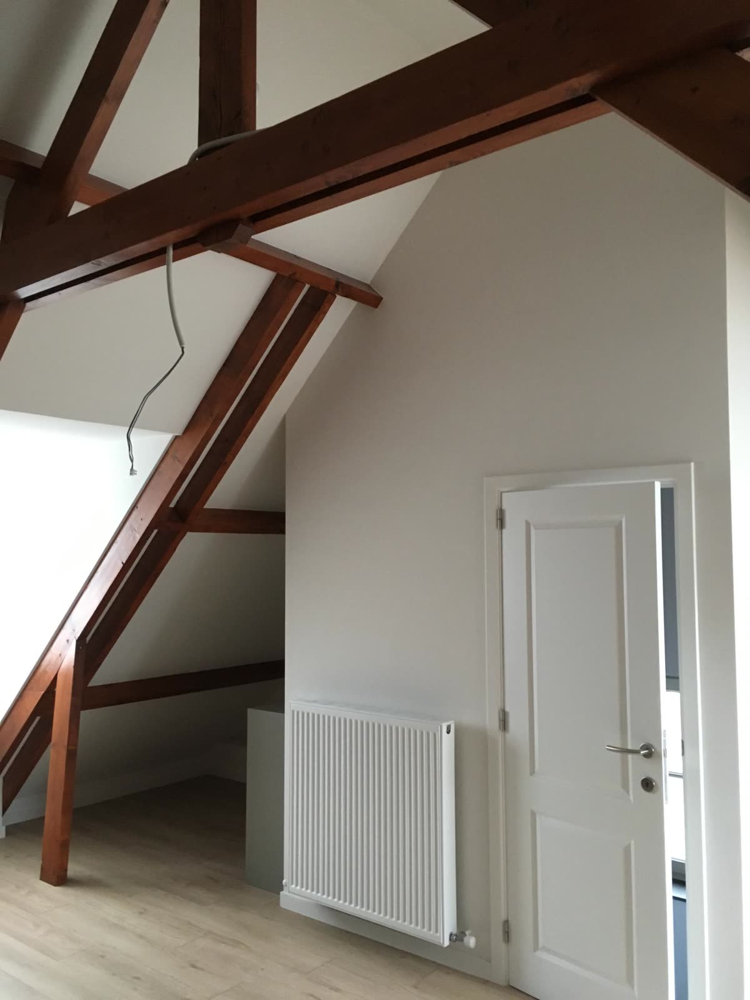
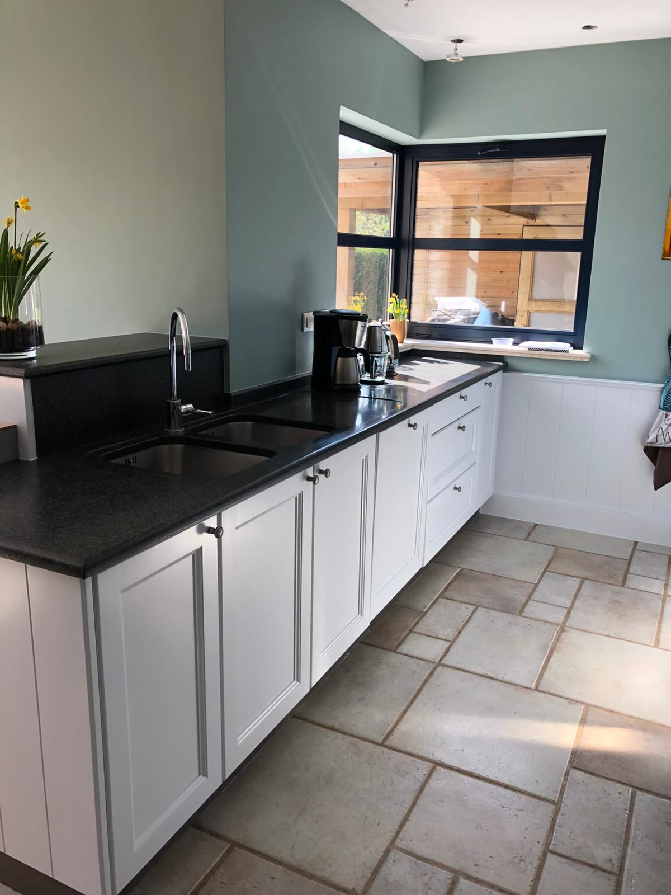
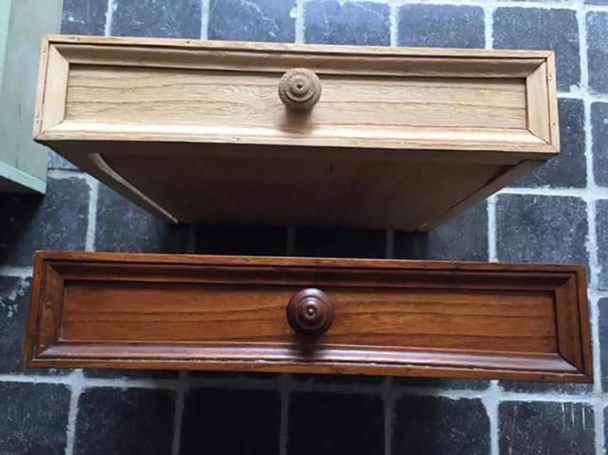

Uitvoerende werken
Alles wat wij bij je thuis uitvoeren
Van één kamer tot een volledig totaalproject. Onze eigen ploeg doet het werk, onder toezicht van zaakvoerder Bart Lyssens die zelf meewerkt. Je prijsofferte is altijd gratis.
01
Schilderwerken
Onder toezicht van meewerkend patroon Bart Lyssens brengen onze ervaren en vakkundige fijnschilders al je binnen- en buitenschilderwerken tot een goed einde. Met onze eigen kleur- en verfmengmachine maken we meer dan 70.000 kleuren, zodat je de perfecte kleur vindt voor je project.
- Decoratieve structuurverf zoals Sigmulto Stucco, voor een marmereffect op je muren
- Spuittechnieken op Sigmulto en andere muren, voor een krasvast resultaat
- Lakken van deuren en spuiten van krasvaste watergedragen lakken
- Airless spuiten van muren en plafonds met onze eigen spuitmachine
- Kaleien van muren, voor een authentieke look
- Advies & vakmanschap: meer dan 50 jaar ervaring in kleuradvies en ondersteuning
Wij werken enkel met kwaliteitsverven zoals Sigma, Lucite, CBS, Mathys en Trimetal, voor een prima garantie en eindresultaat.

02
Behangen
“Zowel posterbehang als vliesbehang heeft voor ons geen geheimen meer.” Al meer dan 20 jaar werken wij enkel met kwaliteitsmerken behang.
- Flamant
- Arte
- Living
- Hooked on Walls
- Meister Vlies & glasvezel
- en nog veel meer
Spring binnen in de winkel om in meer dan 90 verschillende behangboeken te kijken en alle prijzen en maten te weten te komen.

03
Vloerbekleding
“Bij Decoratie Lyssens gebruiken we veel verschillende soorten vloerbekleding en werken we enkel met de beste en kwaliteitsvolle merken.”
- Vast tapijt (tapis-plain)
- Vinylvloeren
- Novylon
- LVT-vloeren
- Laminaat
- Tarkett
- Sisal
- en nog veel meer
Geen idee wat past bij de rest van je interieur, of ben je op zoek naar advies? We staan je graag te woord in de winkel en zoeken samen de mooiste oplossing. Wij plaatsen ook de bijpassende plinten of schilderplinten.

04
Raamdecoratie & zonwering
Dankzij topmerken zoals Loft79, Kobé, Flamant, Arté, Hooked On Walls, Vriesco, Oer en Unland plaatsen onze ervaren installateurs allerlei soorten raamgarnering. Alles wordt op maat gemaakt in ons eigen atelier.
- Rolgordijnen
- Verticale & horizontale lamellen
- Japanse panelen
- American stores
- Screens
- Vouwgordijnen
- Jaloezieën in hout of aluminium
- en nog veel meer
Binnen een straal van 10 km rond Merksem worden al onze raamdecoraties gratis gemeten en geplaatst. Laat je een totaalproject uitvoeren? Dan krijg je bovendien 10% korting op de gordijnstoffen.

05
Spuittechnieken
“Het spuiten van je meubels of muren brengt veel voordelen met zich mee.” Spuiten zorgt ervoor dat je verf veel gladder staat: geen structuur van borstels of rollen op gespoten meubels.
Watergedragen lakken hebben duidelijke voordelen. De krasvastheid is even sterk als bij synthetische lakken, je hebt minder irriterende geuren omdat de verf bijna geurloos is, en de verf droogt heel snel waardoor er minder kans is op stof. Liever synthetische lak? Dat kan ook.
- Keukenkasten
- Nieuwbouw
- Ingebouwde kasten
- Plafonds en muren
- en veel meer

06
Luchtgommen
Bij Decoratie Lyssens kiezen we voor de duurzamere versie van zandstralen: luchtgommen.
Wat is luchtgommen?
Luchtgommen gebeurt onder lage druk met een keramische korrel. De zacht gommende aanraking zorgt ervoor dat alle details even scherp blijven. Het is een relatief nieuwe techniek, maar ideaal als je bepaalde oppervlakken een nieuwe afwerkingslaag wil geven. Oude afwerkingslagen verwijderen en vanaf de basis beginnen levert sowieso een mooier en kwalitatiever resultaat op.
Wat kan je laten luchtgommen?
Meubels (stoelen, tafels, kasten, bedden), trappen, deuren, plafondbalken, lambrisering en houten vloeren. Het grote voordeel: niet alleen hout, maar ook metaal en steen kunnen geluchtgomd worden.

07
Kroonlijsten (ORAC)
“Onze installateurs zijn specialisten in het installeren van ORAC-kroonlijsten. Zij helpen je graag verder om je huis net dat tikkeltje mooier te maken.”
Een gewone effen geschilderde muur of plafond wordt vaak als saai ervaren. Met kroonlijsten fleuren ze helemaal op en krijgen ze meteen een architecturale look.

08
Totaalproject
“Wordt afgewerkt zoals het voor ons zou moeten zijn.”
Een totaalproject is het volledig verfraaien van je interieur of van een volledige ruimte. Dat kan schilderen, behangen, raamgarnering en vloerbekleding zijn. Alles in één keer, met één aanspreekpunt.
Bij deze keuze geniet je van gratis opmeten en plaatsen plus een korting op de stoffen.

09
Interieuradvies
Persoonlijke aanpak. Wij komen gratis ter plaatse om je te helpen de juiste keuze te maken, zowel voor verfkleuren als voor behang. Dat kan ook in combinatie met andere zaken, zoals een totaalproject.
Door de jarenlange ervaring kunnen de medewerkers van Lyssens je de gepaste kennis en raad geven: kleur, behang, raamdecoratie, vloerbekleding en nog veel meer. Ook bij problemen met vocht, scheuren en barsten kan je bij ons terecht. Wij lossen graag elk probleem voor je op.
Interieurstyling op maat
Om een volledig pakket te kunnen aanbieden werken wij sinds enige tijd samen met een binnenhuisstyliste. Zij gaat samen met jou op zoek naar de juiste aankleding van de kamers, nadat wij ze spectaculair hebben afgewerkt.
Gratis en vrijblijvend
Benieuwd wat jouw project kost?
We komen ter plaatse kijken, meten alles op en bezorgen je een duidelijke prijs. Zonder verborgen kosten.